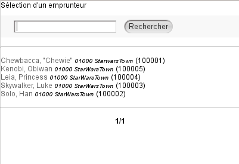

Groupes de lecteurs
ConseilContexte d'utilisation⚓
Les groupes de lecteurs permettent de rassembler des lecteurs appartenant à une même entité (famille, école, ...).
Ce système propose plusieurs avantages :
afficher le nom du groupe en en-tête des courriers de relances,
éditer une seule relance pour l'ensemble des retards d'un groupe (uniquement avec les relances effectuées depuis l'onglet
Éditions),abonner les membres d'un groupe à une alerte (DSI).
Créer un groupe de lecteur⚓
ProcédureProcédure de création d'un groupe⚓
Créer un nouveau groupe
Le menu
Groupes de lecteursaffiche un formulaire permettant de rechercher un groupe.Pour créer un groupe, cliquez sur le bouton
Nouveau groupe.Renseigner les propriétés du groupe
Complétez les informations demandées :
Donnez un nom au groupe.
Attribuez un responsable (lecteur qui aura été préalablement créé).
Cochez la ou les case(s) selon si vous souhaitez :
Adresser les lettres de rappel individuelles au responsable de ce groupe (cas des familles)
Adresser les mails de rappel individuels au responsable de ce groupe ? (cas des familles)
Afficher du nom du groupe sur les courriers de relance individuel
Attention
Le responsable d'un groupe n'appartient pas forcément au groupe. Il n'est donc pas automatiquement inscrit comme membre du groupe. Il est nécessaire de cocher la case présente sous le sélecteur afin de l'ajouter directement.
Cliquez sur le bouton
Enregistrer. PMB affiche ensuite la fiche du groupe :Ajouter un (ou des) membre(s)
Dans la fiche d'un groupe repérez la zone permettant d'ajouter un nouveau lecteur :
Cliquez sur le bouton
...pour rechercher un lecteur :Recherchez le(s) lecteur(s) souhaité(s) et cliquez sur leur nom pour les affecter au groupe.
RemarqueContenu de la page du groupe⚓
Sur cette page, vous trouvez :
Le nom du responsable du groupe, suivi de son numéro de lecteur entre parenthèses.
La liste des lecteurs du groupe, ainsi que le nombre de prêts de chacun entre parenthèses.
Actions réalisables sur un groupe⚓
ComplémentModifier les propriétés d'un groupe⚓
Dans la page du groupe, cliquez sur le bouton Modifier pour accéder aux propriétés du groupe :
Apportez les modifications souhaitées et Cliquez sur Enregistrer pour les valider.
ComplémentRetirer un membre d'un groupe⚓
Dans la liste, repérez le nom du lecteur à retirer du groupe, puis cliquez sur l'icône , située en fin de ligne.
Prolongation des adhésions groupées⚓
PMB permet la prolongation groupée des adhésions des membres d'un groupe. Cette fonctionnalité peut s'avérer utile lorsque le groupe est constitué d'une famille, des élèves d'une promotion,...
Le paramètre associé doit être activé dans l'onglet Administration.
Un bouton Prolonger l'abonnement des membres apparaît alors en mode visualisation du groupe.
Procédure
Cliquer sur le bouton
Prolonger l'abonnement des membres.Un message d'alerte apparaît vous demandant de confirmer la prolongation d'adhésion pour l'ensemble du groupe. Cliquer sur
OK.La date de fin d'adhésion est prolongée pour l'ensemble des membres du groupe.